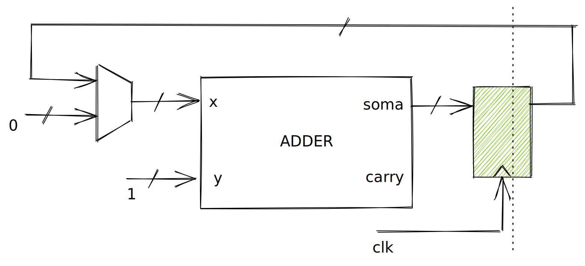

Lab 8: Lógica Sequencial¶
Agora vamos ver como implementamos uma lógica sequencia em MyHDL! Até agora temos utilizado o decorator: @always_comb para indicar que uma função deve ser interpretada como um trecho combinacional:
@always_comb
def comb():
led.next = l
Agora vamos começar usar um novo decorator (@always_seq) para indicar que uma função deve ser sequencial e depender do clock e do reset. O módulo aseguir demonstra como implementar um flip-flop tipo D em MyHDL:
@block
def dff(q, d, clk, rst):
@always_seq(clk.posedge, reset=rst)
def seq():
q.next = d
return instances()
Notem que estamos usando @always_seq(clk.posedge, reset=rst), e indicando que o módulo deve ser acionado na borda de subida do sinal clk e que o sinal de reset deve ser o rst.
Podemos interpretar o def seq() da seguinte maneira: Sempre que o sinal clock variar de 0 para 1 a função é acionada e então a saída q recebe a entrada d. Podemos visualizar isso como um while True:
while True:
q.next = d
time.sleep(1/CLOCK)
dff¶
Clock¶
O sinal de clock da nossa FPGA é de 50Mhz, ou seja: 50 000 000 vezes por segundo! Isso parece muito né? Mas, dependendo do projeto, podemos elevar o clock para 200Mhz ou usar FPGAs mais rápidas que chegam próximo do 1GHz.
Piscando LED¶
Agora com o uso da lógica sequencial conseguimos contar 'tempo' e gerar eventos em determinado momento. Ou seja: podemos contar 0.5 segundos e mudar o valor do led, contar mais 0.5 s e mudar novamente (fazer o famoso pisca led). Para isso, teremos que conseguir contar eventos de clock, e quando o valor chegar em 25 000 000 inverter o valor do LED e zerar o contador e ficar nesse loop para sempre.
Podemos usar o nosso adder do lab anterior como módulo de contador, conectando a saída do adder na entrada x, mas passando por um registrador antes (para apenas mudar a cada clock). A entrada y será conectado ao valor 1, como resultado teremos: s = x + 1. A expressão será executada a cada subida do clock. E x será:
if s < MAX:
x.next = s
else:
x.next = 0
Se o valor de s for menor que o valor máximo (define a velocidade que o LED irá piscar) copiamos a saída do somador para a entrada, e se o valor MAX for atingido, iremos zerar o somador, para começarmos novamente. O HW que queremos gerar é algo como:

A implementação em MyHDL:
@block
def blinkLedAdder(led, clk, rst):
x = [Signal(bool(0)) for i in range(32)]
y = [Signal(bool(0)) for i in range(32)]
s = [Signal(bool(0)) for i in range(32)]
c = Signal(bool(0))
status = Signal(bool(0))
y[0] = 1
adder_1 = adder(x, y, s, c)
@always_seq(clk.posedge, reset=rst)
def seq():
if x[21] == 0:
for i in range(len(x)):
x[i].next = s[i]
status.next = status
else:
for i in range(len(x)):
x[i].next = 0
status.next = not status
@always_comb
def comb():
led.next = status
return instances()
Alguns detalhes devem ser levados em consideração na implementação do componente:
- Estamos lidando com vetores de bit, que devem ser acessados individualmente
- O
seqacontece a cada mudança do clock - O
combacontece sempre - Não podemos
leruma saída
- if s < MAX:
+ if x[24] == 0 and x[23] == 0:
Temos que lembrar que estamos lidando com um vetor de bits que não possuem ligação entre si, então não podemos fazer uma comparação como se eles fossem um inteiro: if x < 25000000, mas temos que verificar os bits individualmente. Nesse caso eu estou verificando se os bits 24 e 23 são iguais a zero. Pois:
2^24 + 2^23 = 25165824
Um valor muito próximo de 25M (um erro menor que 1%). Que para o pisca led não será perceptível. Poderíamos é claro melhorar colocando mais bits na verificação, mas não é necessário.
Por conta de x e s serem vetores, temos que fazer uma varredura para atribuirmos cada um dos index:
- x.next = s
+ for i in range(len(x)):
+ x[i].next = s[i]
Warning
É importante sabermos que o for em hardware não existe, é apenas um recurso para facilitar a descrição do componente, no lugar de escrevermos isso:
x[0].next = s[0]
x[1].next = s[1]
...
A ideia de piscar o LED é que temos que mudar uma variável a cada ciclo do contador.
----------- -------------
| | | Status
| | |
----------- ----------
_ 25000000 _ _
/ | / | / |
/ | / | / | Contador
/ | / | / |
/ |/ | / |
Mas como o sinal led é uma saída, não podemos acessar ele diretamente. Para isso, eu criei um sinal interno auxiliar status que é alterado sempre que o contador é zerado:
def seq():
if x[24] == 0 and x[23] == 0:
status.next = status
else:
status.next = not status
E então atribuímos o valor de status para a saída led na parte combinacional do módulo:
def comb():
led.next = status
Melhorando¶
Até agora estamos usando mal os recursos do MyHDL, o componente anterior poderia ser muito mais simples se:
- Pudéssemos tratar sinais como
inteiros - Não precisássemos usar o
adder
Para isso o MyHDL possui outros dois tipos de dados além do bool, vamos trabalhar com o intbv
Hardware design involves dealing with bits and bit-oriented operations. The standard Python type int has most of the desired features, but lacks support for indexing and slicing. For this reason, MyHDL provides the intbv class. The name was chosen to suggest an integer with bit vector flavor.
Do mamual: http://docs.myhdl.org/en/stable/manual/hwtypes.html
Alguns exemplos de como trabalhar com o tipo:
>>> a = intbv(24)
>>> b = intbv(2)
>>> print(a)
24
>>> print(a + b)
26
>>> print(a == 12)
False
O intbv não limita a quantidade de bits que será utilizado
, isso funciona muito bem na simulação, mas quando formos gerar um hardware temos que definir o tamanho do vetor caso contrário teremos erro na conversão.
O exemplo a seguir indica como criarmos um sinal cnt com 32 bits:
# cnt com 32 bits do tipo intbv
>>> cnt = Signal(intbv(0)[32:])
>>> cnt.max
4294967296
>>> cnt.min
0
blink melhorado¶
Vamos agora reimplementar o blink, mas usando os novos recursos:
@block
def blinkLed(led, clk, rst):
cnt = Signal(intbv(0)[32:])
l = Signal(bool(0))
@always_seq(clk.posedge, reset=rst)
def seq():
if cnt < 25000000:
cnt.next = cnt + 1
else:
cnt.next = 0
l.next = not l
@always_comb
def comb():
led.next = l
return instances()
Muito mais simples em! =)
Desafio¶
Ideias de LABs com utilidade:
- Ultrasom HC-SR04?
- LED RGB
- StepMotor
- Servo
- ...